DHCP, es un protocolo (Dynamic Host Configuration Protocol) tiene como función proporcionar configuraciones de forma centralizada desde un servidor de la red, evitando así el tener que hacerlo de forma descentralizada desde cada estación de trabajo.
Un cliente que haya sido configurado con DHCP no posee direcciones estáticas sino que se configura totalmente de manera automática según las especificaciones del servidor DHCP.
En este último caso, el servidor DHCP procurará asignar a un cliente siempre la misma dirección para cada consulta (aunque estén espaciadas en el tiempo) – claro que esto no funcionará si en la red hay más ordenadores que direcciones.
Por lo tanto, el administrador del sistema puede beneficiarse de DHCP de dos formas.
Por una parte es posible realizar de forma centralizada, cómoda y automática grandes Modificaciones (de configuración y/o de direcciones de red) en el archivo de configuración del servidor DHCP y todo ello sin tener que configurar los clientes uno a uno.
Por otra parte y sobre todo, es posible integrar fácilmente nuevos ordenadores a la red Asignándoles un número IP del conjunto de direcciones.
cantidad
Sub red
Inicio red
Fin red
broadcast
1
192.168.0.0
192.168.0.1
192.168.0.14
192.168.0.15
2
192.168.0.16
192.168.0.17
192.168.0.30
192.168.0.31
3
192.168.0.32
192.168.0.33
192.168.0.46
192.168.0.47
4
192.168.0.48
192.168.0.49
192.168.0.62
192.168.0.63
5
192.168.0.64
192.168.0.65
192.168.0.78
192.168.0.79
6
192.168.0.80
192.168.0.81
192.168.0.94
192.168.0.95
7
192.168.0.96
192.168.0.97
192.168.0.110
192.168.0.111
8
192.168.0.112
192.168.0.113
192.168.0.126
192.168.0.127
9
192.168.0.128
192.168.0.129
192.168.0.142
192.168.0.143
De forma grafica nos ubicamos en el menú systems >> administration >> Network lo cual nos mostrara las tarjetas de red que tenemos disponibles para asignar dirección IP a nuestro servidor figura dhcp1.
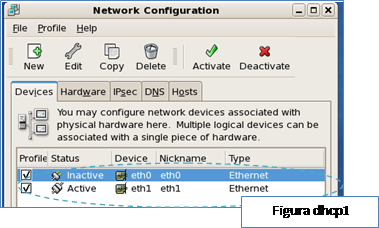
Clic en la herramienta Edit esta nos permitirá editar los parámetros de nuestra tarjeta de red que en nuestro caso es la eth1 como se muestra en la figura dhcp2.
1.4.1 clic en la opción Statically set IP addresses colocamos respetivamente los valores a las líneas address y subnet mask como se lo mostramos en la figura dhcp2.
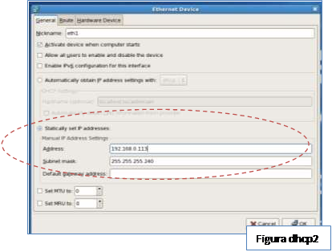
Solo nos queda activar nuestra tarjeta como se muestra en la figura dhcp3 y listo podemos proseguir con la configuración del servidor dhcp.
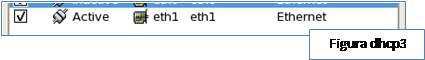
Para iniciar la instalación siempre se recuerda la inserción del DVD de nuestro sistema server en la unidad de lectura correspondiente, para instalar primero ejecutamos el nuestra terminal o Shell el siguiente comando como se nos muestra en la figura dhcp4.
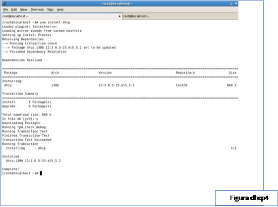
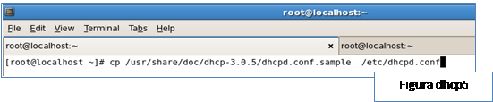
El comando anterior solo nos configura por así decir o llamar la parte existencial en los directorios de configuración del servicio nota sub rayar que este servicio no posee un archivo de configuración como los anteriores pero si posee un ejemplo de configuración el cual tomaremos para configurar nuestro servicio como se nos muestra en la figura dhcp5.
Una ves copiado el archivo procedemos a borrar el archivo de ejemplo como se nos muestra en la figura dhcp6.
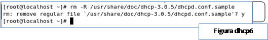
Como siguiente paso creamos una copia de respaldo del archivo dhcpd.conf con el nombre dhcpd.conf.org, luego de procedemos ah editar el archivo de configuración de nuestro dhcp como se muestra en la figura dhcp7.
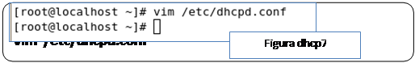
Una vez abierto nuestro archivo de configuración editaremos los parámetros como se muestran en las figuras dhcp8,9 y 10 respectivamente.
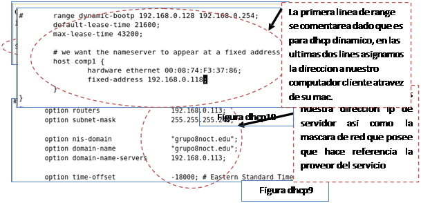
Una ves editado nuestro archivo de configuracion guardamos los cambios y procedemos a algo muy importante que es editar el archivo donde le indicaremos al servicio escuche las peticiones del cliente el cual lo encontramos /etc/sysconfig/dhcpd y procedemos ah editar el archivo como se nos muestran en las figuras dhcp11 y 12.
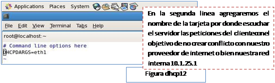
Una vez configurado guardmos el archivo y procedemos a abrir los puestos 67 y 68 en udp desde system>>administration>>securitylevelandfirewall como se nos muestra en la figura dhcp13.
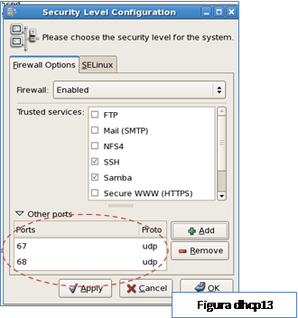
Guardar cambios y procederemos ah reiniciar el servicio de nuestras network, luego iniciamos los servicios dhcpd y los encendemos como se nos muestra en la figura dhcp14.
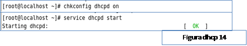
dhcp15.
Listo una vez confirmada que nuestro servidor esta funcionando de forma correcta se podria decir que hemos terminado la configuracion.